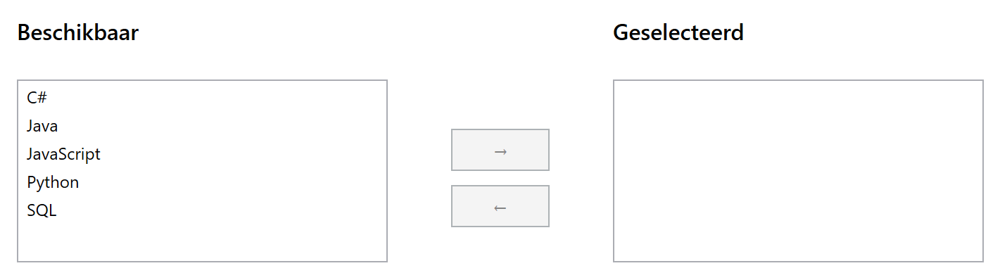
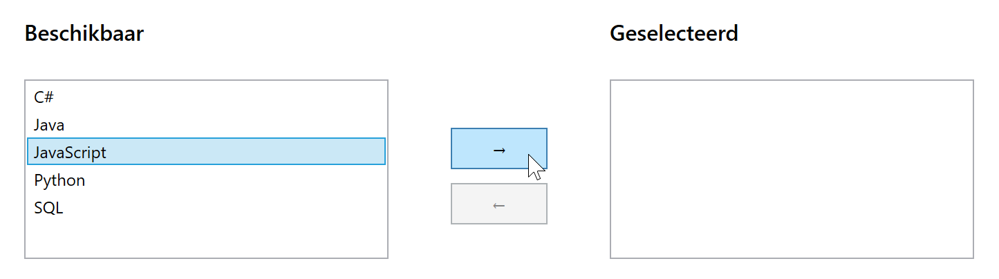
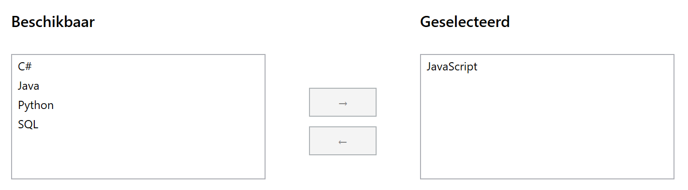

Doel: gebruik ListBox/ListBoxItem met het SelectionChanged event.
Lees eerst grondig de theorie over de ListBox.
Een ListBox toont een lijst met items. In theorie kan een item vanalles zijn, zelfs een zuivere string,
maar maak er een goede gewoonte van enkel objecten van het type ListBoxItem toe te voegen. Gebruik verder properties als Items, SelectedItem en SelectedIndex, en het SelectionChanged event.
Een gedeelte van de XAML is al voorzien.
IsEnabledClick-event toe aan elk van de buttons. Bij klik:
SelectedItem propertyRemove()Add()ListBox-en een SelectionChanged event handler toe; gebruik dezelfde event handler voor beiden

